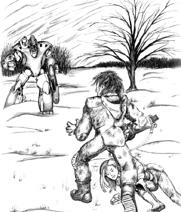

NEW INVID NPCs, BASES,
SPACECRAFT, AND EQUIPMENT
As the Third Invid War dragged on, it became clear to resistance fighters that the new Invid forces occupying Earth were definitely NOT the same as those that had invaded it during the Second Invid War. At first the Invid used the same mecha designs and tactics as the Regis did, but eventually new designs started appearing along with new, innovative strategies that took the rebels by surprise. It was almost as if whoever was leading these new invaders was becoming more imaginative (and more deadly) as time went on.
The first divergence from typical Invid strategy appeared in 2041, when new lights were noticed in the night sky by the resistance. Later reconnaissance revealed that these lights were in fact powerful orbiting Space Hives, heavily armed and armored, and designed specifically for anti-spacecraft warfare. Apparently the Invid had learned from their defeat at the Battle of Reflex Point in the Second Invid War, and were trying to make sure that the Earth was isolated from REF fleets returning from Tirol. Then, in 2043 as the Invid Space Hives were nearing completion, the first new Invid mecha designs began to appear on Earth. This took the resistance completely by surprise, and many rebels were lost while trying to adjust to the deadlier mecha.

Changes were also becoming apparent in the Invid's behaviour towards humanity. Before 2043, the Invid mostly ignored the civilian population of Earth. So long as terrans did not take up arms and attack the Invid, they were content to leave them alone. In early 2044 some Invid began actively recruiting gangs of dissident humans to work for them. These invid sympathizers, called FRAGS, were used to pacify towns and hunt down rebels, and generally supplement the forces of the Invid in areas of lower value. The Invid also started stepping up their attacks against the resistance during this time, conducting organized sweeps and strikes against towns suspected of housing or aiding resistance fighters, as well as attacking small towns to try and draw the resistance out of hiding.
However, even these increases in savagery by the new Invid paled compared to what was to come. In 2045 (known as the start of "The Dark Years") the Invid began rounding up civilians from surrounding towns and herding them into massive Slave Camps, where they were forced to harvest massive amounts of the Flower of Life for shipment to places unknown (to the humans). After harvest, the flower was stored on huge Cargo Transports, which then took off from the farms and headed into Earth orbit.
These changes led to a decrease in morale among terran resistance, as more and more people died and the Invid continued to gain power despite their best efforts. Unless something was done soon, there would be no hope left for those fighting for freedom during the Third Invid War...


 |
http://www.mcs.net/~deitrich/index.html deitrich@mcs.net |
Last Updated: |